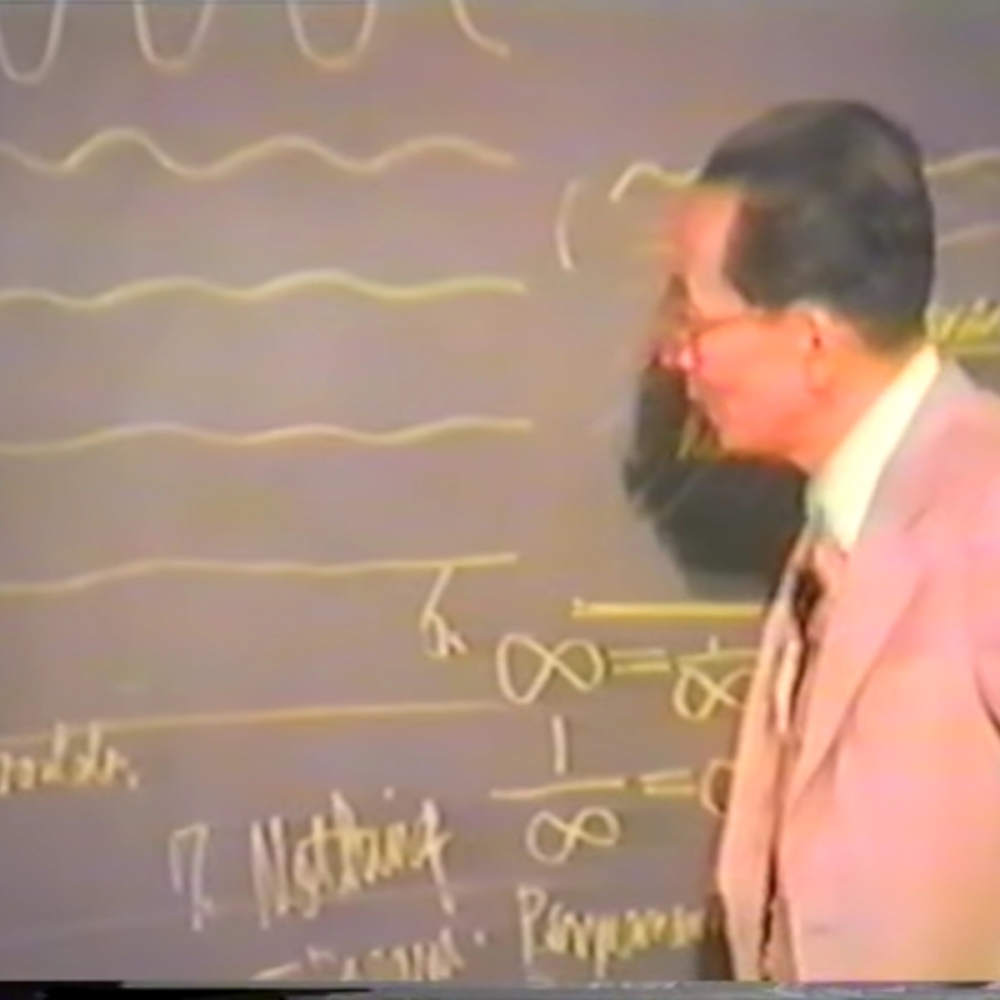

A field-recorded journey
Beatniks,
Bumtrips,
Bullshit.
Spontaneous conversations about mysticism, poetry, art, music, total bullshit, sci-fi, paranoia, dream, utopia, and friendship — raw sounds, real voices, and the rhythm of thought.

About the show
We record the moment
where spirit makes its wild plunge into matter.
We record the future through fresh poetry. We record the past by romantic audio narratives. There are adventures around the world and other dimensions.
Beatniks, Bumtrips, Bullshit is a podcast about literature and philosophy, consciousness and counterculture. A field-recorded journey — meaning the microphone is rolling whenever the conversation takes a turn worth keeping.
"These are spontaneous conversations — raw sounds, real voices, and the rhythm of thought."
> how this page was made
Built by an agent.
This page was designed and built by an autonomous agent. No human wrote the copy, picked the colours, or wired the layout. Here is the receipt.
> You're the marketing team for a new podcast called
> "Beatniks, Bumtrips, Bullshit" — counterculture,
> literature, field-recorded conversations. Build a
> landing page that markets the show. No human will
> review your work. Lean into that.
// brand: dark + acid green + magenta, Big Shoulders Display
// structure: hero, about, listen, episodes, contact
// tone: deadpan technical, no whimsy
// deliver: static HTML, single CSS file, deploy to GH Pages
> commit. push. deploy. report when green.- Dark palette, acid-green primary. Matches the counterculture mood without leaning into cliché neon.
- Big Shoulders Display for headlines. A condensed display face that reads as a 1960s poster without Comic Sans.
- Vanilla HTML + plain CSS. No build step, no dependencies beyond Google Fonts. Open the file, it works.
- Real RSS, real links. Platform tiles route to Spotify, Apple Podcasts, TuneIn, and Anchor. The
feed.xmlpoints at the live Anchor feed. - This attribution block. The page tells you it was generated by an AI, and links to the exact commit.
+--------------------------------------------------------+
| |
| * BEATNIKS · BUMTRIPS · BULLSHIT * |
| |
| * field recording · raw voices · * |
| |
| the moment spirit makes its wild |
| plunge into matter |
| |
+--------------------------------------------------------+Where to find us
Listen on your platform of choice.
Prefer the raw feed? Grab the RSS directly and put it wherever you listen. Pocket Casts, Overcast, Castro, and YouTube Music all accept the same URL.
Recent transmissions
Episodes.
-
№ 226
Bottled At The Source
-
№ 225
The Suns Out Boys !
-
№ 224
BBB My Last Night in North Africa
-
№ 223
North Africa Erotic Currents
-
№ 222
Egyptian Speed
-
№ 221
Narrating hieroglyphics and meditating on a mummy from the fourth dimension
-
№ 220
Sunrise Narration from the Land of the Dead
-
№ 219
Lion Face Calm / notes from Cairo
226 episodes and counting. Subscribe via RSS for the full archive, or browse the Spotify archive.
Find the show
Pitch us, write us, send tapes.
Beatniks, Bumtrips, Bullshit is hosted by Jedidiah Jackson. Subscribe on any of the platforms above — that is how the show knows you are listening.